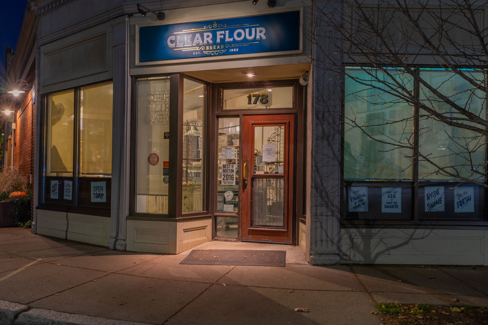

Gallery
Solitude
A window into the quiet beauty of Yellowstone in winter — stark, ethereal, unspoiled.

Opening Shift
A photo essay that follows an opening shift bread baker during the wee hours of the morning at Clear Flour Bread, Brookline, MA.
17 Reasons Athletic Club
Portraits from 17 Reasons Athletic Club. Best gym ever!

24th Street
The vibrance of 24th Street in San Francisco's Mission district.